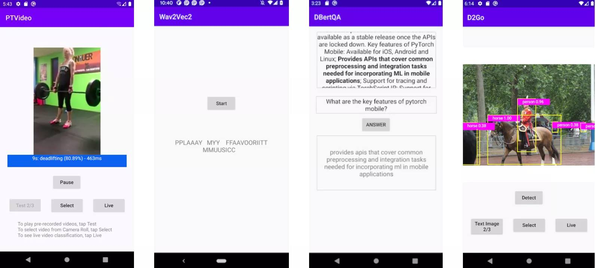

新版本: PyTorch 1.9版本，包括torch.linalg 和 Mobile Interpreter
发布: 2021年06月15日
译者：@片刻
来自 PyTorch团队
我们很高兴地宣布PyTorch 1.9的发布。自1.8以来，该版本由398名贡献者提交的3400多个提交组成。发布说明可以在这里找到。亮点包括：
- 支持科学计算的重大改进，包括torch.linalg、torch.special和Complex Autograd
- 使用Mobile Interpreter对设备上二进制大小进行了重大改进
- 通过将 TorchElastic 上游到 PyTorch Core 来原生支持弹性容错训练
- PyTorch RPC框架的重大更新，以支持GPU支持大规模分布式训练
- 新的API用于优化模型推理部署的性能和打包
- 支持PyTorch Profiler中的分布式训练、GPU利用率和SM效率
除了1.9，我们还发布了PyTorch库的重大更新，您可以在这篇博客文章中阅读。
我们要感谢社区对最新版本的支持和工作。我们特别要感谢Quansight和微软的贡献。
PyTorch版本中的功能分为稳定、测试和Prototype。您可以在这篇博客文章中了解有关定义的更多信息。
前端API
(Stable)torch.linalg
在1.9中，torch.linalg模块正在移动到稳定版本。线性代数对深度学习和科学计算至关重要，torch.linalg模块通过实现NumPy的线性代数模块(现在支持加速器和autograd)等每个函数，如torch.linalg.matrix_norm和torch.linalg.householder_product，扩展了PyTorch对它的支持。这使得使用NumPy的用户立即熟悉该模块。请参阅此处的文档。
我们计划下周发布另一篇博客文章，其中包含有关torch.linalg模块的更多详细信息！
(Stable)Complex Autograd
在PyTorch 1.8中作为测试版发布的Complex Autograd功能现在稳定。自测试版发布以来，我们在PyTorch 1.9中扩展了对超过98%的运算符的复杂Autograd支持，通过添加更多OpInfos改进了对复杂运算符的测试，并通过TorchAudio迁移到本机复杂tensor增加了更大的验证(请参阅此问题)。
此功能为用户提供了计算复杂梯度和优化具有复杂变量的真实价值损失函数的功能。对于PyTorch中复杂数字的多个当前和下游潜在用户，如TorchAudio、ESPNet、Asteroid和FastMRI，这是一个必需的功能。有关更多详细信息，请参阅文档。
(Stable)torch.use_deterministic_algorithms()
为了帮助调试和编写可复制程序，PyTorch 1.9包括一个torch.use_determinstic_algorithms选项。启用此设置后，如果可能的话，操作将具有确定性的行为，或者如果可能具有非确定性的行为，则会抛出运行时错误。以下是几个例子：
>>> a = torch.randn(100, 100, 100, device='cuda').to_sparse()
>>> b = torch.randn(100, 100, 100, device='cuda')
# Sparse-dense CUDA bmm is usually nondeterministic
>>> torch.bmm(a, b).eq(torch.bmm(a, b)).all().item()
False
>>> torch.use_deterministic_algorithms(True)
# Now torch.bmm gives the same result each time, but with reduced performance
>>> torch.bmm(a, b).eq(torch.bmm(a, b)).all().item()
True
# CUDA kthvalue has no deterministic algorithm, so it throws a runtime error
>>> torch.zeros(10000, device='cuda').kthvalue(1)
RuntimeError: kthvalue CUDA does not have a deterministic implementation...
PyTorch 1.9还为许多索引操作添加了确定性实现，包括index_add、index_copy和带有accum=False的index_put。有关更多详细信息，请参阅文档和重现性说明。
(Beta)torch.special
类似于SciPy的特殊模块的 torch.special模块现已提供测试版。该模块包含许多对科学计算和处理分派等分布有用的功能，如iv、ive、erfcx、logerfc和logerfcx。有关更多详细信息请参阅文档。
(Beta)nn.Module参数化
nn.Module参数化允许用户参数化nn.Module的任何参数或缓冲区，而无需修改nn.Module本身。它允许您限制参数所在的空间，而无需特殊的优化方法。
这也包含PyTorch 1.9的spectral_norm参数化的新实现。此功能将添加更多参数化(weight_norm、矩阵约束和部分修剪)，使该功能在1.10中变得稳定。有关更多详细信息，请参阅文档和教程。
PyTorch Mobile
(Beta)Mobile Interpreter
我们正在发布测试版的 Mobile Interpreter，这是PyTorch运行时的简化版本。解释器将在边缘设备中执行PyTorch程序，并减少二进制大小的占用空间。
Mobile Interpreter是PyTorch Mobile的首选功能之一。与当前设备上的运行时相比，这个新版本将显著减少二进制大小。为了让您通过我们的解释器获得二进制大小改进(对于典型应用程序，二进制大小可以减少到~75%)，请按照以下说明操作。例如，使用Mobile Interpreter，我们可以在arm64-v7a Android中使用MobileNetV2压缩到2.6 MB。通过这个最新版本，我们通过为iOS和Android提供预构建库，使集成解释器变得更加简单。
TorchVision图书馆
从1.9开始，用户可以在iOS/Android应用程序上使用TorchVision库。Torchvision库包含C++ TorchVision ops，需要与iOS的主PyTorch库链接在一起，对于Android，它可以作为gradle依赖项添加。这允许使用TorchVision预构建的MaskRCNN操作符进行对象检测和分割。要了解有关该库的更多信息，请参阅我们的教程和演示应用程序。
演示应用程序
我们正在发布一个基于PyTorch视频库的新视频应用程序和一个基于最新torchaudio，wave2vec模型的更新语音识别应用程序。两者都可以在iOS和Android上使用。此外，我们还更新了七个计算机视觉和三个自然语言处理演示应用程序，包括HuggingFace DistilBERT和DeiT视觉变压器模型，使用PyTorch Mobile v1.9。随着这两个应用程序的加入，我们现在提供了一整套涵盖图像、文本、音频和视频的演示应用程序。要开始使用，请查看我们的iOS演示应用程序和Android演示应用程序。

分布式训练
(Beta)TorchElastic 现在是核心的一部分
TorchElastic是一年多前在pytorch/elastic github存储库中开源的，是PyTorch工作进程的运行器和协调者。从那时起，它被各种分布式torch用例采用：1)deepspeech.pytorch 2)pytorch-lightning 3)Kubernetes CRD。现在，它是PyTorch核心的一部分。
顾名思义，TorcheElastic的核心功能是优雅地处理缩放事件。弹性的一个显著的必然结果是，同行发现和等级分配内置在TorchElastic中，使用户能够在可抢占实例上运行分布式训练，而无需帮派调度器。作为附带说明，etcd曾经是TorchElastic的硬依赖。随着上游，情况不再如此，因为我们添加了一个基于c10d::Store的“独立”会合。有关更多详细信息，请参阅文档。
(Beta)分布式训练更新
除了TorchElastic，分布式软件包中还有许多测试版功能：
-
(Beta)CUDA支持在RPC中可用：与CPU RPC和通用RPC框架相比，CUDA RPC是P2Ptensor通信的更有效方式。它建立在TensorPipe之上，可以根据呼叫者和被呼叫者的Tensor设备类型和信道可用性，为每个Tensor自动选择通信通道。现有的TensorPipe通道涵盖NVLink、InfiniBand、SHM、CMA、TCP等。请参阅此食谱，了解CUDA RPC如何帮助实现与CPU RPC相比的34倍速度。
-
(Beta)ZeroRedundancyOptimizer：ZeroRedundancyOptimizer可以与DistributedDataParallel一起使用，以减少每个进程优化器状态的大小。ZeroRedundancyOptimizer的想法来自DeepSpeed/ZeRO项目和Marian，其中每个流程中的优化器拥有模型参数的碎片及其相应的优化器状态。运行
step()时，每个优化器只更新自己的参数，然后使用集体通信来同步所有进程中更新的参数。请参阅本文档和本教程以了解更多信息。 -
(Beta)支持分析分布式集体：PyTorch的分析器工具，torch.profiler和torch.autograd.profiler，能够分析分布式集合体和点对点通信原语，包括allreduce，alltoall，allgather，send/recv等。这为PyTorch原生支持的所有后端启用：gloo、mpi和nccl。这可用于调试性能问题，分析包含分布式通信的痕迹，并深入了解使用分布式训练的应用程序的性能。要了解更多信息，请参阅此文档。
性能优化和工具
(Stable)Freezing API
Freezing 模块是将模块参数和属性值作为常量内联到TorchScript内部表示中的过程。这允许进一步优化和专业化您的程序，既用于TorchScript优化，也可用于降低到其他后端。它由 optimize_for_mobile API、ONNX 等使用。
建议在模型部署中Freezing。它有助于TorchScript JIT优化优化训练、调优或调试PyTorch模型所需的开销和簿记。它启用了在非冻结图上无效的图融合，例如融合Conv-BN。有关更多详细信息，请参阅文档。
(Beta)PyTorch profiler

新的PyTorch Profiler将进入测试版，并利用Kineto进行GPU分析，利用TensorBoard进行可视化，现在是我们教程和文档的标准。
PyTorch 1.9将对新torch.profiler API的支持扩展到更多版本，包括Windows和Mac，在大多数情况下，建议使用以前的torch.autograd.profiler API。新的API支持现有的分析器功能，与CUPTI库(仅限Linux)集成以跟踪设备上的CUDA内核，并为长期运行的作业提供支持，例如：
def trace_handler(p):
output = p.key_averages().table(sort_by="self_cuda_time_total", row_limit=10)
print(output)
p.export_chrome_trace("/tmp/trace_" + str(p.step_num) + ".json")
with profile(
activities=[ProfilerActivity.CPU, ProfilerActivity.CUDA],
# schedule argument specifies the iterations on which the profiler is active
schedule=torch.profiler.schedule(
wait=1,
warmup=1,
active=2),
# on_trace_ready argument specifies the handler for the traces
on_trace_ready=trace_handler
) as p:
for idx in range(8):
model(inputs)
# profiler will trace iterations 2 and 3, and then 6 and 7 (counting from zero)
p.step()
更多使用示例可以在profiler recipe 页面上找到。
PyTorch Profiler Tensorboard插件具有以下新功能：
- 带有NCCL通信概述的分布式训练摘要视图
- 跟踪视图和GPU操作员视图中的GPU利用率和SM效率
- 内存分析视图
- 从Microsoft VSCode启动时跳转到源代码
- 从云对象存储系统进行负载跟踪的能力
(Beta)Inference模式API
Inference 模式API允许显著加快推理工作负载的速度，同时保持安全，并确保不会计算出不正确的梯度。当不需要自动升级时，它提供了最佳的性能。有关更多详细信息，请参阅文档，了解推理模式本身，以及解释何时使用它以及与no_grad模式的区别的文档。
(Beta)torch.package
torch.package是一种以自包含、稳定格式打包PyTorch模型的新方法。软件包将包括模型的数据(例如参数、缓冲区)及其代码(模型架构)。用其全套Python依赖项打包模型，结合对conda环境的描述和固定版本，可用于轻松重现训练。在自包含工件中表示模型还将允许其在整个生产ML管道中发布和传输，同时保留纯Python表示的灵活性。有关更多详细信息，请参阅文档。
(Prototype)prepare_for_inference
prepare_for_inference是一个新的Prototype功能，它采用模块并执行图形级优化，以提高推理性能，具体取决于设备。它旨在成为PyTorch原生选项，需要对用户的工作流程进行最小的更改。有关更多详细信息，请参阅此处的Torchscript版本或此处的FX版本的文档。
(Prototype)在TorchScript中进行配置文件定向输出
TorchScript硬性要求源代码具有类型注释，以便编译成功。长期以来，只能通过反复试验(即通过逐一修复torch.jit.script生成的类型检查错误)来添加缺失或不正确的类型注释，这是低效和耗时的。现在，我们通过利用MonkeyType等现有工具为torch.jit.script启用了配置文件定向键入，这使得该过程更简单、更快、更高效。有关更多详细信息，请参阅文档。
谢谢你的阅读。如果您对这些更新感兴趣，并想加入PyTorch社区，我们鼓励您加入讨论论坛并打开GitHub问题。要从PyTorch获取最新消息，请在Facebook、Twitter、Medium、YouTube或LinkedIn上关注我们。
Cheers!
PyTorch 团队